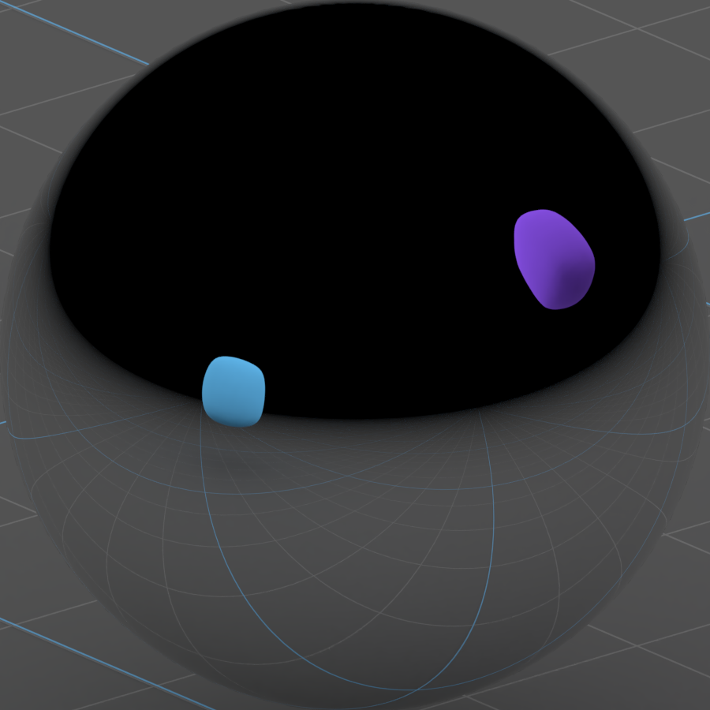

Iro Materials are, in most cases, a replacement for the glTF PBR material. They are specifically developed for embedded targets where the use of the more complex PBR material would harm performances.
The main advantages is that the Iro Materials offer a lighter material option where reflections are still possible, but not as expensive to run. These materials have been implemented through the Kuesa custom material glTF extension mecanism. Second, they are easier to edit and work with. This is especially true when using the the Blender addon provided by Kuesa Studio which gives artists a real time preview of the IroMaterials.
Note: You can get imperfect reflections when viewing your model from under, if your application allows the user to fully orbit around the model.
| First of all, create your material reflection map (swatch) Sphere Placement |
| Here's the result from the previous image  Material Result |
| Here is how the material looks, once it's applied
Iro-Material |
| and a PBR version for comparison PBR Comparison |